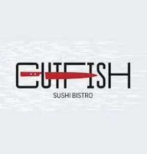
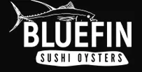
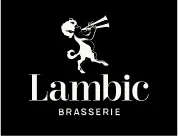

Cutfish
На первом этаже Башни на набережной (лобби, вход Б) открылся новый и уже тринадцатый по счету ресторан популярной пивной сети - Lambic Brasserie. Архитектор проекта Анастасия Землянская сохранила в интерьере настроение других проектов, сделав новый Lambic отражением запроса резидента Москва-Сити. В меню - более 200 сортов бельгийского пива и блюда европейской кухни. В будни с 9:00 до 12:00 действует меню завтраков. А во время обеда, с 12:00 до 16:00, - скидка 20% на все позиции. Начать свой день жителям и работникам Сити предлагают с домашних круассанов (80 р.), панкейков с ягодами (450 р.), драников из батата с гуакамоле и сметаной (450 р.) или лосося собственного посола с авокадо и яйцом пашот на картофельных вафлях (480 р.)
Bluefin
Ресторан BLUEFIN открыл свои двери 20 декабря у подножия башен МФК Neva Towers. Профессиональные повара с огромным опытом работы в лучших японских ресторанах Москвы, которые знают, как угодить изысканному гостю. У ресторана имеется доставка в эксклюзивной упаковке, которая не имеет аналогов. Еженедельная прямая поставка свежей рыбы и морепродуктов из Японии и дальнего востока. Большую часть меню составляет стиль никкей - смесь перуанской и японской кухни. Бренд-шеф по японскому направлению - Николай Ким. Бренд-шеф по направлению никкей - Сантьяго Торрихос.
Lambic
На первом этаже Башни на набережной (лобби, вход Б) открылся новый и уже тринадцатый по счету ресторан популярной пивной сети - Lambic Brasserie. Архитектор проекта Анастасия Землянская сохранила в интерьере настроение других проектов, сделав новый Lambic отражением запроса резидента Москва-Сити. В меню - более 200 сортов бельгийского пива и блюда европейской кухни. В будни с 9:00 до 12:00 действует меню завтраков. А во время обеда, с 12:00 до 16:00, - скидка 20% на все позиции. Начать свой день жителям и работникам Сити предлагают с домашних круассанов (80 р.), панкейков с ягодами (450 р.), драников из батата с гуакамоле и сметаной (450 р.) или лосося собственного посола с авокадо и яйцом пашот на картофельных вафлях (480 р.). На обед или ужин рекомендуют заказывать фирменный салат Lambic со сладкими томатами и ростбифом (850 р.), жареный камамбер с грушей (920 р.), говяжью грудинку с пастой орзо и белыми грибами (790 р.) или мидии в соусе том-ям (940 р.)